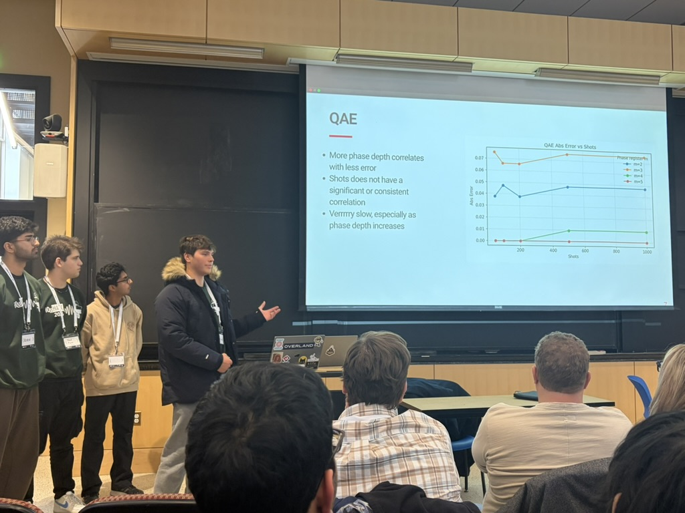
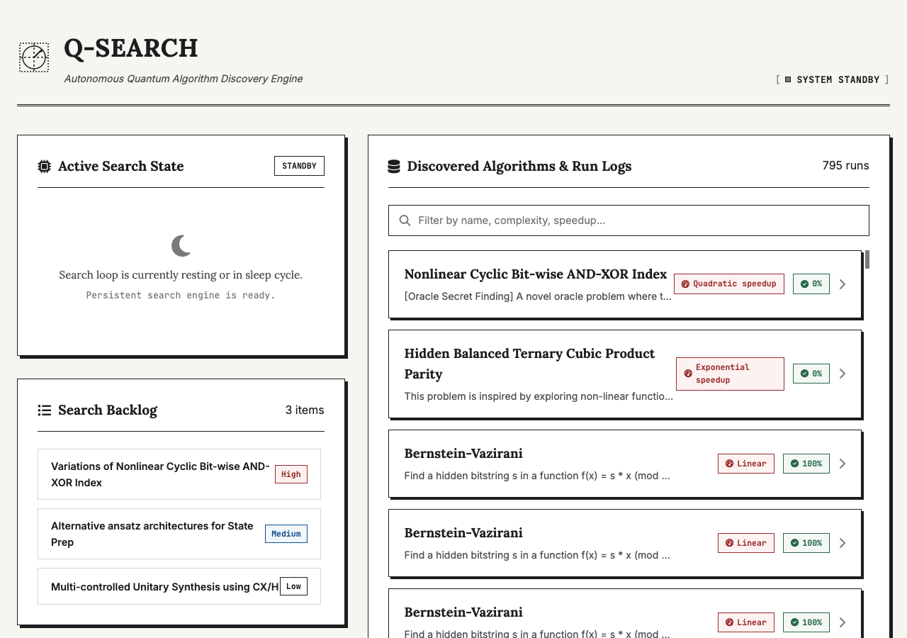
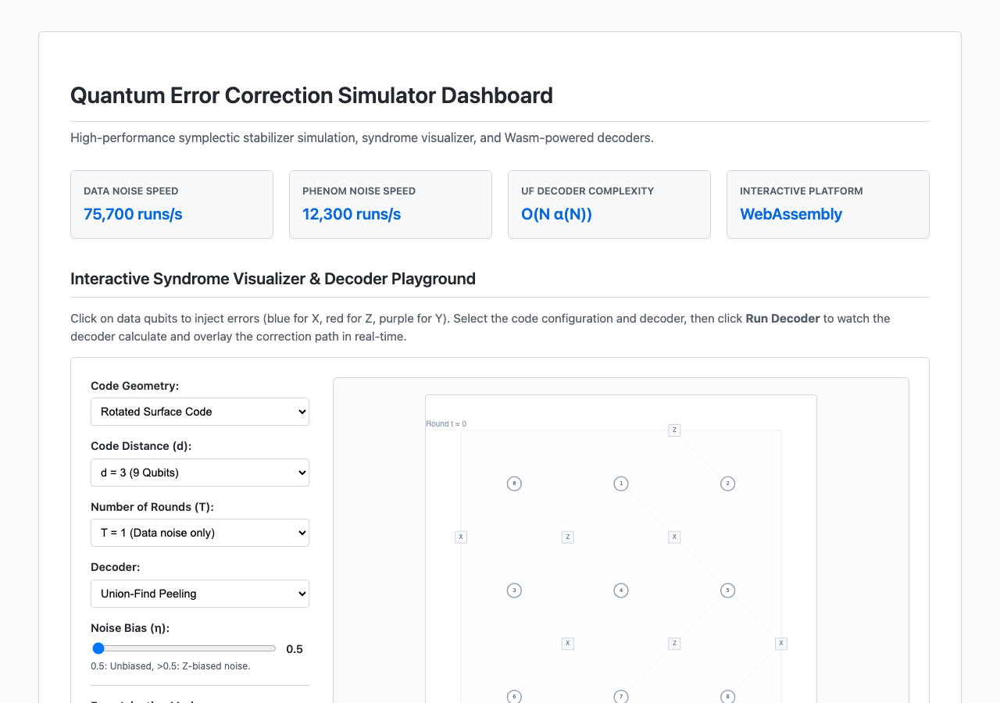
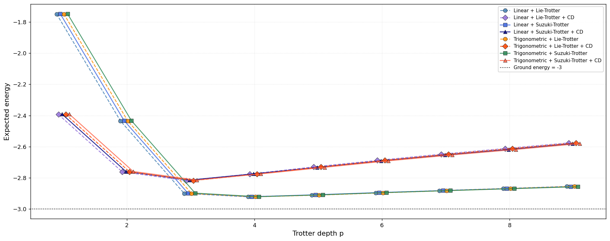
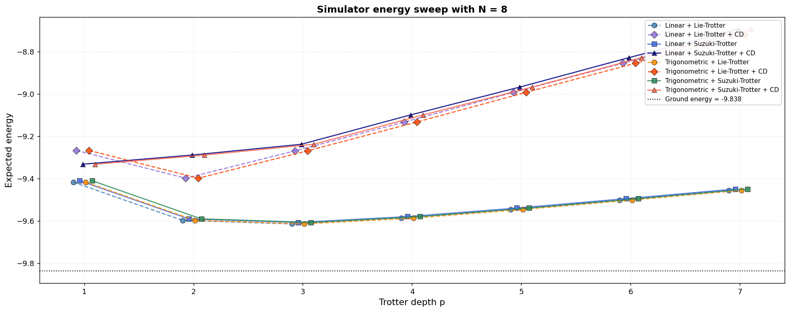
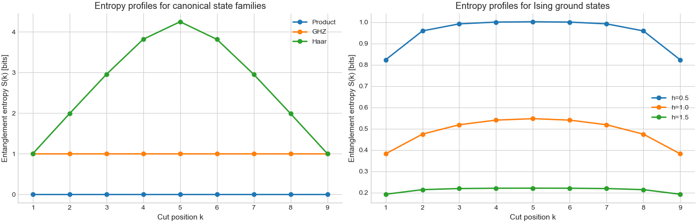
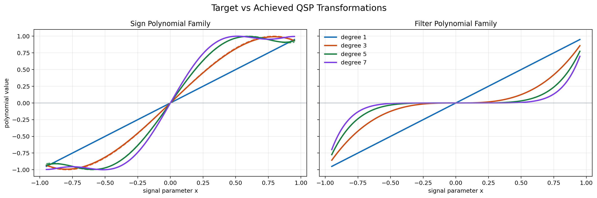
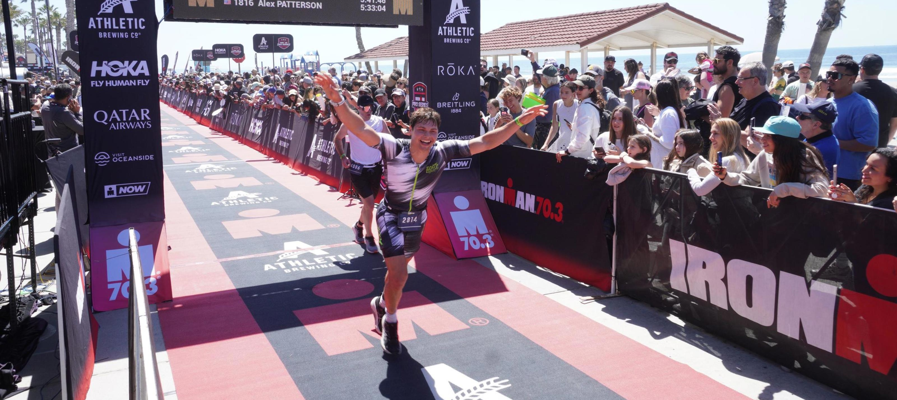
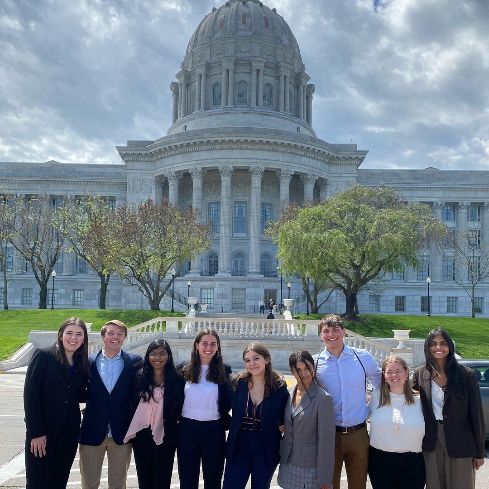

About Me
Born and raised in the heart of Silicon Valley, I grew up surrounded by technology, curiosity, and constant reinvention. That environment sparked my passion for understanding how systems work, and how to make them better. Over the years, my journey in computer science has evolved from building software and hacking together creative projects to exploring the deep theoretical and computational frontiers of quantum computing and machine learning.
I’ve developed a strong foundation in AI-driven research, spanning topics from large language models and data-driven drug discovery to quantum algorithms and distributed systems. My portfolio includes hands-on work in both academia and industry, from fine-tuning LLMs for policy analysis to designing scalable inference pipelines and investigating ways to improve the reliability of generative protein modeling.
I believe innovation happens where theory meets application. I bring a mix of scientific curiosity, engineering precision, and creative experimentation to every project, driven by the conviction that emerging technologies like quantum computing and AI will redefine how we solve the world’s hardest problems.
Education
Columbia University
- COMS 6998E: Quantum Error Correction
- EECS 6890E: Quantum Engineering
- PHYS 5084GR: Quantum Simulation & Computing Lab
- ELEN 4730E: Quantum Optimization & ML
- COMS 4281W: Intro to Quantum Computing
- COMS 6997E: Machine Assisted Math
- COMS 4776E: Neural Networks & Deep Learning
- COMS 4762W: ML for Functional Genomics
- COMS 4281W: Intro to Quantum Computing
Washington University in St. Louis
- CSE 587A: Algorithms for Biosequence Comparison
- CSE 517A: Machine Learning
- CSE 437S: Software Engineering Workshop
- CSE 434S: Reverse Engineering & Malware Analysis
- CSE 433S: Computer Security
- CSE 417T: Intro to Machine Learning
- CSE 412A: Intro to Artificial Intelligence
- CSE 347: Analysis of Algorithms
- CSE 332S: OOP Software Development
- CSE 330S: Creative Programming & Prototyping
- CSE 231S: Parallel & Concurrent Programming
- ESE 326: Probability & Statistics for Engineering
- Math 310: Foundations for Higher Math
- Math 309: Matrix Algebra
- Econ 413W: Econometrics (Writing Intensive)
- Econ 4111: Optimization & Economic Theory
- Econ 467: Game Theory
- CSE 434S: Reverse Engineering and Malware Analysis
- CSE 231S: Introduction to Parallel and Concurrent Programming
Danish Institute for Study Abroad Copenhagen
- Artificial Neural Networks and Deep Learning
- Artificial Intelligence
Israel Summer Business Academy (WashU Olin)
- MGT 200: Venture Creation
- INTL 320: Business, Innovation & Entrepreneurship
Menlo School
- 4 Years of Computer Science Studies
- Score of 5 on AP Computer Science A
Research
Columbia MS Thesis Research
Conducting MS thesis research focused on "Automation of Silicon Spin Qubit Measurements Using Machine Learning" under the co-supervision of Dr. Nard Dumoulin Stuyck (Diraq/UNSW Sydney) and Prof. Henry Yuen (Columbia). Developing machine learning pipelines to automate state classification and measurement acquisition using cryogenic probing infrastructure.
Cidon Systems Research Lab
Collaborating with Dr. Asaf Cidon and Barracuda Networks to design machine-learning pipelines detecting spam and phishing attacks. Integrating language-model embeddings with real-world email telemetry to maximize detection precision and minimize false positive rates.
Quantum Reading Group
Leading technical deep-dives into Andrew Childs' quantum algorithms notes. Analyzing mathematical frameworks for Hamiltonian simulation, amplitude amplification, QPE, and LCU. Conducting simulation validation and coordinating talks with faculty and PhD researchers.
Desdr Open Insurance Toolkit
Developed an open-source insurance modeling toolkit with Dr. Eugene Wu. Processed field surveys into actuarial and climate-risk features, designing data pipelines and models to estimate expected agricultural losses in low-data developing regions.
View Project WebsiteCRIS Lab
Researched hallucination-reduction techniques in generative protein modeling under Dr. Venkat Venkatasubramanian. Built tools translating natural language pharmaceutical queries into structured, graph-grounded molecular properties to validate AlphaFold structures.
Foster Care Policy Database
Fine-tuned a LLaMA-3 model using Unsloth and Hugging Face to query complex multi-state foster care regulations. Implemented a web-hosted interface leveraging Human-in-the-Loop reinforcement learning to iteratively refine policy answers.
GitHub RepositoryComputer Vision & AI Lab
Developed distributed high-throughput scraping pipelines under Dr. Umar Iqbal. Parsed and cleaned large online forums data (billions of posts) to execute demographic and behavioral trend studies at population scale.
Work Experience
Smack Technologies
Developing physics simulations and training decision models to optimize core technology pipelines. Implementing robust state transition mappings and simulation benchmarks to validate model policy actions.
Highnote
Managed the SIEM ecosystem for card-issuing fintech platform. Unified distributed logs/telemetry from AWS, GCP, and Datadog into a centralized Elasticsearch cluster supporting 1TB+ daily ingestion. Configured custom agents, ingest pipelines, and 100+ high-fidelity behavior rules (including ML anomalies) to strengthen transaction infrastructure security.
Mindtrip
Built critical admin interfaces for a travel-tech startup leveraging large language models. Developed internal secure query panels using JS (frontend) and Ruby on Rails (backend) via Retool. Streamlined data verification, eliminated direct DB writes, and saved 250+ hours monthly in manual engineering interventions.
Bugcrowd
Managed end-to-end vulnerability triage, confirming and validating security submissions from global researchers. Collaborated with major technology clients to prioritize critical vulnerabilities, coordinate disclosure pathways, and advise on defensive mitigations.
Sparkiverse
Taught computer science fundamentals (logic gates, control flows) to elementary school students. Adapted curriculum to a remote model during COVID-19 by deploying interactive learning spaces within zoom and Minecraft servers to preserve engagement.
University Club of Palo Alto
Developed emergency-management and team communication skills. Maintained pool safety, coached swim mechanics, and handled crisis situations calmly to safeguard members.
Featured Projects
WhatTheDuck
Designed a classical Quasi-Monte Carlo baseline and contributed to a quantum Iterative Amplitude Estimation (IQAE) approach for financial Value at Risk (VaR) estimation. Built and benchmarked the GPU-accelerated state preparation, threshold oracle, and bisection search using CUDA-Q. Empirically validated the O(1/ε) quantum speedup compared to O(1/ε²) classical scaling under identical loss bounds.

Q-Search
Designed and built a multi-agent system powered by Gemini models configured as specialized researcher roles (Theorist, Synthesizer, Simulator, Analyzer). The engine autonomously proposes novel candidate quantum problems, designs circuit implementations, tests correctness via stabilizer and oracle simulations, fits mathematical scaling models to analyze query/gate complexity, and updates a live dashboard showing discovered speedups.

WASM QEC Simulator
Developed a high-performance symplectic stabilizer simulator in Rust compiled to WebAssembly. Supports real-time interactive physical error injection, syndrome visualization, and logical error benchmarking for Rotated and XZZX Surface Codes. Built a custom dashboard interface that runs decoders (including Minimum Weight Perfect Matching) client-side in the browser.

Noise-Aware Adiabatic Simulation
Optimized digitized adiabatic state preparation of ground states for the 1D Transverse-Field Ising Model. Leveraged IBM Heron processor's native fractional RZZ gates to cut logical-to-physical gate translation errors in half. Designed a palindromic Trotter step template (second-order accuracy) to cancel error accumulation, implemented sigmoidal sweeping schedules to slow down near the quantum critical point, and added counterdiabatic driving corrections via the adiabatic gauge potential.


LLM-Based Lossless Text Compression
Investigated the practical throughput and memory bounds of text compression using autoregressive LLMs and arithmetic coding. Achieved 5-16× average compression (up to 39×), outperforming zstd/gzip. Optimized systems constraints through static KV-caching, CUDA graph capture, and segment-level batched inference.
Other Projects
Entanglement & Matrix Product States (MPS)
Investigated the relationship between wavefunction bipartite entanglement structure and the compression efficiency of Matrix Product States (MPS). Built a sequential SVD Wavefunction decomposition simulator in Python, analyzing Schmidt coefficient spectra and entanglement entropy across internal cuts. Evaluated compression scaling, L2 reconstruction errors, and fidelity limits under truncation for Product, GHZ, Haar-random, and Ising ground states.

QSVT Matrix Spectrum Transformations
Explored Quantum Signal Processing (QSP) and Quantum Singular Value Transformation (QSVT) as a unified mathematical framework for polynomial quantum algorithms. Built QSP phase sequences in Qiskit to approximate sign-style functions and exact filter polynomials. Constructed a 2-qubit block encoding of a 2x2 Hermitian matrix, demonstrating eigenvalue transformations directly on the spectrum.

Multimodal Hyperbolic Embeddings (HyperAMR)
Introduced HyperAMR, a multimodal representation framework mapping metagenomic contigs, AMR annotations, and taxonomic hierarchies into a shared hyperbolic space. Validated that hyperbolic geometries capture parent-child biological lineages more accurately than Euclidean coordinates, significantly boosting AUPR on rare resistance classes.
Activities & Hobbies
Self-Supported Bike Touring
Passionate about fully self-contained bike tours carrying all camping gear, food, and supplies.
- 3,200 miles from Savannah, Georgia to Los Angeles, California (Summer 2019)
- 1,500 miles from Amsterdam, Netherlands to Barcelona, Spain (Summer 2018)
- 1,000 miles touring the Canadian and Montanan Rockies (Summer 2021)
- 400 miles from Jasper to Banff, Canada (Summer 2025)
- 2025 Death Ride: 115 miles, 14,000 ft of climbing in the Sierra Mountains
Gymnastics
Competitive gymnast for many years. Trained with Stanford Boys Gymnastics, then joined the WashU Gymnastics Club leading practice sessions and competing in intercollegiate meets.

Endurance & Triathlon
- 2025 Oceanside Ironman 70.3 Finish Time: 5:18
- 2025 Lake Placid Ironman (Interrupted by stress fracture /:)

Columbia Autonomous Racing Club
Founding semester member. Coordinating sponsor outreach and translating hardware/software racing baselines for local track testing.
WashU Votes
Promoted civic action and registration drives. Led legislator outreach at the Missouri State Capitol in Jefferson City to advocate for voting accessibility.

St. Louis Tutor Me Program
Volunteer math and literacy tutor. Supported K-12 students in local underserved districts to bridge learning gaps.
Skills & Toolkit
Quantum Computing & Algorithms
Algorithms & Primitives
Variational & Hybrid
Compilation & Simulation
Languages
Libraries & Frameworks
Quantum & Math
Machine Learning & Compute
Mathematics & Theory
Foundations
Optimization & Complexity
Tooling, Systems & Cloud
Web & Databases
Databases
App Frameworks
Non-Technical Toolkit
Let's Chat
Get In Touch
Have a question about my research, quantum algorithms, or want to collaborate on a project? Drop me a message! You can also ask me about the Minnesota Vikings, Legos, Harry Potter, or Formula 1.